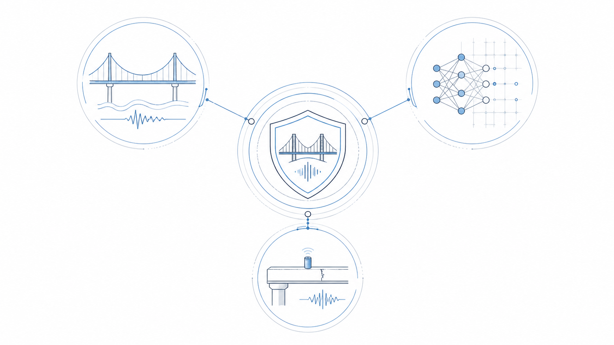
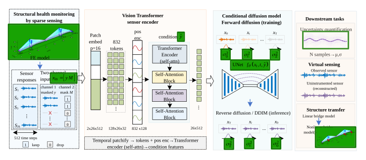
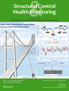

About
I am a Ph.D. candidate in Civil Engineering at the University of Notre Dame, working with Prof. Patrick Brewick in the Brewick Group.
My research develops scientific machine learning methods for modeling, inference, and control of complex dynamical systems, with applications to civil, mechanical, aerospace, and marine structures. I am particularly interested in neural and solution operators, generative models for inverse problems, reinforcement learning, and uncertainty-aware learning.
My work integrates structural dynamics, scientific machine learning, and computational mechanics, with the broader goal of developing reliable and data-efficient methods for physical systems where high-fidelity simulation is expensive and measurements are sparse, noisy, or incomplete. I also work with wireless sensing, real-time hybrid simulation, and structural experiments to connect computational methods with measured physical systems.
I earned my M.S. in Civil Engineering from Tianjin University in 2022, including a research visit to the LIFT Laboratory at Nanyang Technological University. Before Notre Dame, I was a research assistant at the Institute of Urban Smart Transportation and Safety Maintenance at Shenzhen University.

Research Priorities
My research spans a computational pipeline of modeling, inference, and control, grounded in sensing and physical experimentation. Four complementary priorities guide current projects:

Scientific ML & Operator Learning
Neural and solution operators, multi-fidelity modeling, and uncertainty-aware surrogates for complex dynamical systems.

Inverse Problems & Generative Inference
Physics-informed and generative methods for identifying unknown inputs and states from sparse, noisy, and incomplete observations.

Learning-Based Control
Reinforcement learning and data-driven control for vibration mitigation, real-time hybrid simulation, and nonlinear dynamical systems.

Sensing & Experimental Systems
Wireless sensing, hybrid testing, shaking-table experiments, and field measurements that connect learning methods with physical systems.
Model → Infer → Control, grounded in sensing and experimentation. All research projects →

Selected Publications
-
Jichuan Tang, D. An, P. T. Brewick, C. Wang. “Using Conditional Diffusion Models for Data-Driven Force Identification of Structural Dynamic Systems Under Uncertainty.” Advanced Engineering Informatics, 2026. Accepted
-
Jichuan Tang, R. G. McClarren, C. Sweet, P. T. Brewick. “A Full-field Extended Deep Operator Network as a Spatio-temporal Surrogate for Structural Dynamics.” Journal of Computing in Civil Engineering, 2026. Accepted
-

N. Li, Jichuan Tang, Z.-X. Li, S. Gao. “Reinforcement Learning Control Method for Real-time Hybrid Simulation based on Deep Deterministic Policy Gradient Algorithm.” Structural Control and Health Monitoring, 2022. (Co-first author)